Nyzo 631: graffiti script
Nyzo version 631
(commit on GitHub) adds a client script to support the graffiti Micropay example.
This version affects the client.
In ClientDataManager, an additional exit condition was added for when the
trusted entry points file is empty.
In the run loop, the frozen edge is passed to NyzoScriptManager.
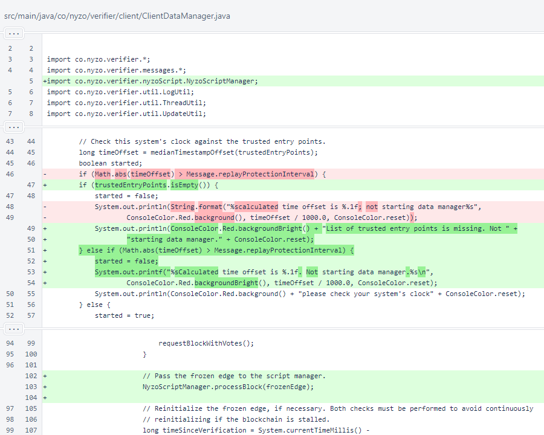
NyzoScriptCommand was added to
CommandManager to make the command available in the client.
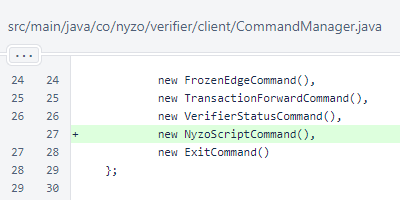
The NyzoScriptCommand takes a single argument, the account identifier.
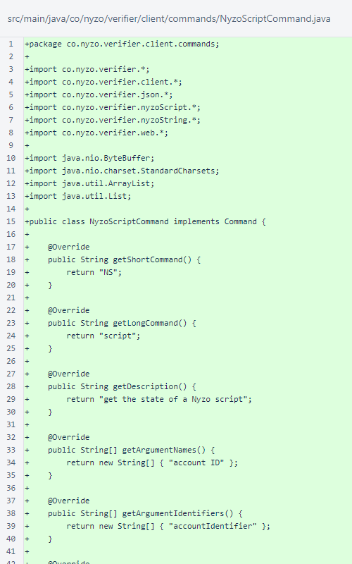
The NyzoScriptCommand does not require validation or confirmation, and it is
not long-running.
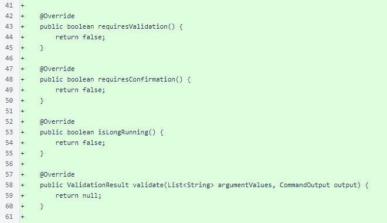
The NyzoScriptCommand fetches the state of the script for the specified
account. The state metadata is provided for HTML and console responses using a
CommandTable passed to a
SimpleExecutionResult. For an endpoint response, the full state is returned.
This includes the same metadata as the HTML and console responses, along with the JSON or binary (encoded as
Base64) state data.
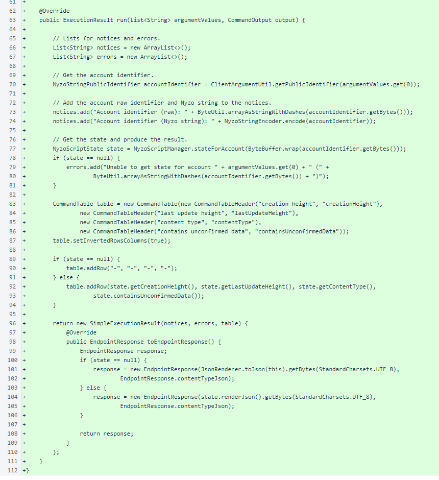
The GraffitiScript implements the behavior for the
graffiti Micropay example. The graffiti wall is 288 pixels by 45 pixels, and
the color and amount of each pixel is tracked.
For building the script mechanism, this particular script is included directly in the Java codebase. Eventually, we
intend to allow all users to register scripts on the blockchain, at which time this script will be removed from the
Java codebase and be a peer with all other Nyzo scripts.
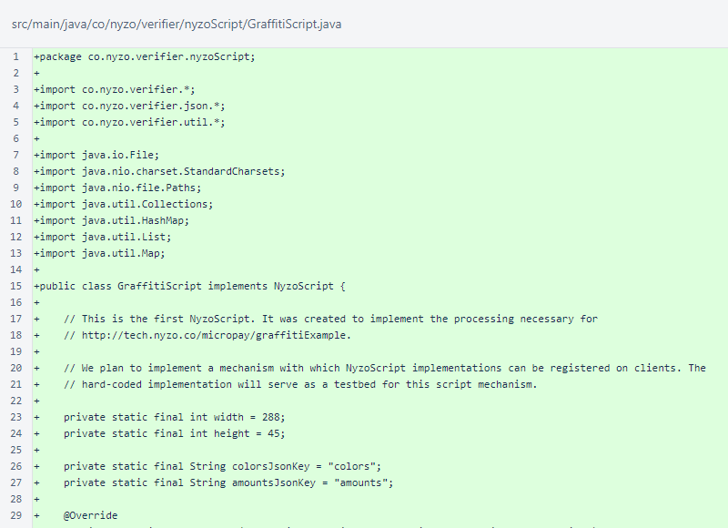
The update() method implements the NyzoScript
interface. It receives the current state, if one is available, along with a list of transactions.
This implementation first ensures that the input data is in the expected format. This also handles a null input
state properly.
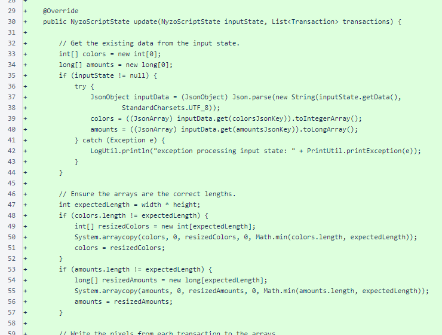
Pixel data is extracted from the transactions, and the pixels and amounts are set in the data arrays. The colors are
indexes in a typical CGA 16-color palette. The amounts are the micronyzo amounts of the transaction that specified
the color for a position. In order for a pixel to be updated, the amount of the transaction must be
at least twice the current amount for the pixel.
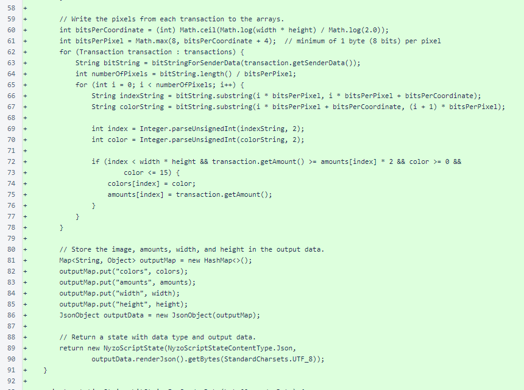
The bitStringForSenderData() method produces a
String object that uses '0' and
'1' characters to represent the bits of a byte array. This is helpful for processing
input transactions, which utilize sub-byte divisions in encoding pixels.
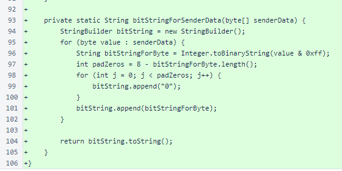
The NyzoScript interface defines a single method,
update(). The inputs are a NyzoScriptState and
list of transactions, and the output is a NyzoScriptState.
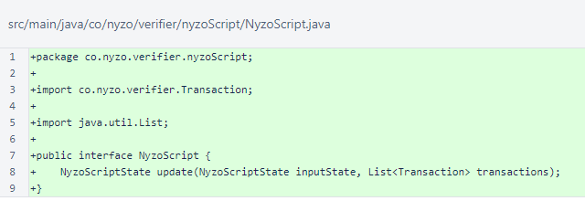
The NyzoScriptManager is responsible for loading scripts, loading states, and
storing states. While full tracking of processed blocks is not yet implemented, the height of the highest block
processed is stored to avoid repeatedly attempting to process the same block.
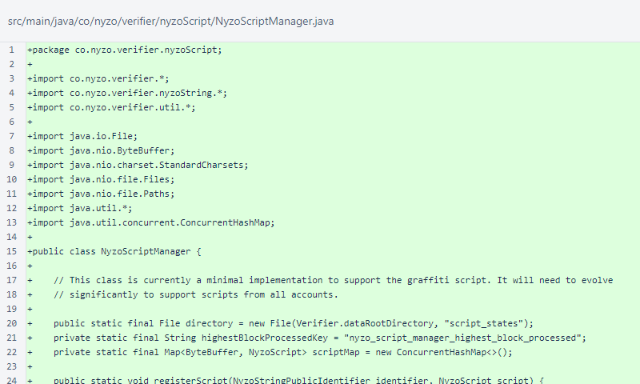
The registerScript() method adds a script to the script manager's map and, if
necessary, generates an initial state for the script.
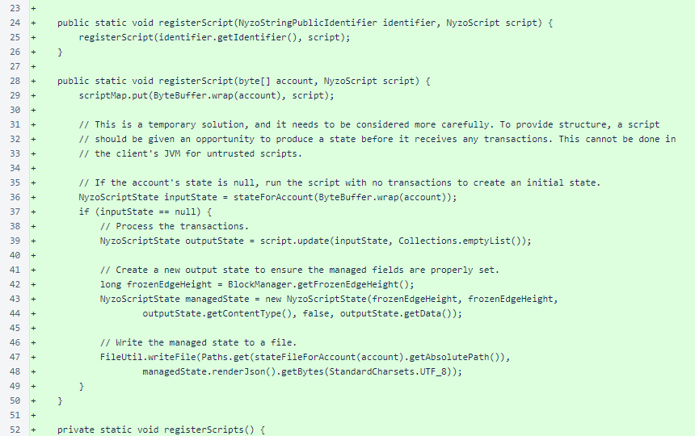
The registerScripts() method registers all scripts with the manager. Currently,
only the GraffitiScript is available.
The scriptForAccount() method provides a script, if available, for the
requested account.
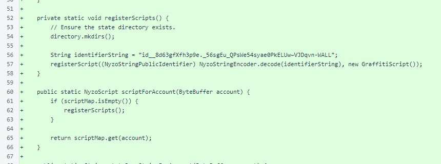
The stateJsonStringForAccount() method reads the state, if
available, that has been persisted for an account. The stateForAccount()
method converts this to a NyzoScriptState object.
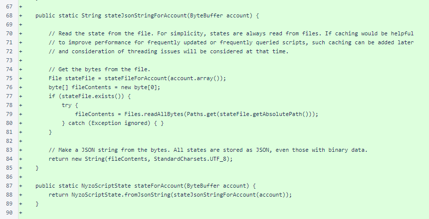
The processBlock() method checks if a block is non-null and whether it is above
the highest block processed. After processing, the height of the highest block processed is updated in
PersistentData.
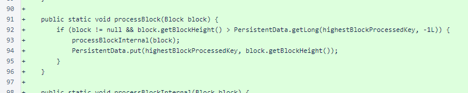
The processBlockInternal() method builds a map of transactions based on
transaction receiver. For each account receiving transactions for which a script is available, the state is loaded
from file, the script is processed, and the updated state is written back to file.
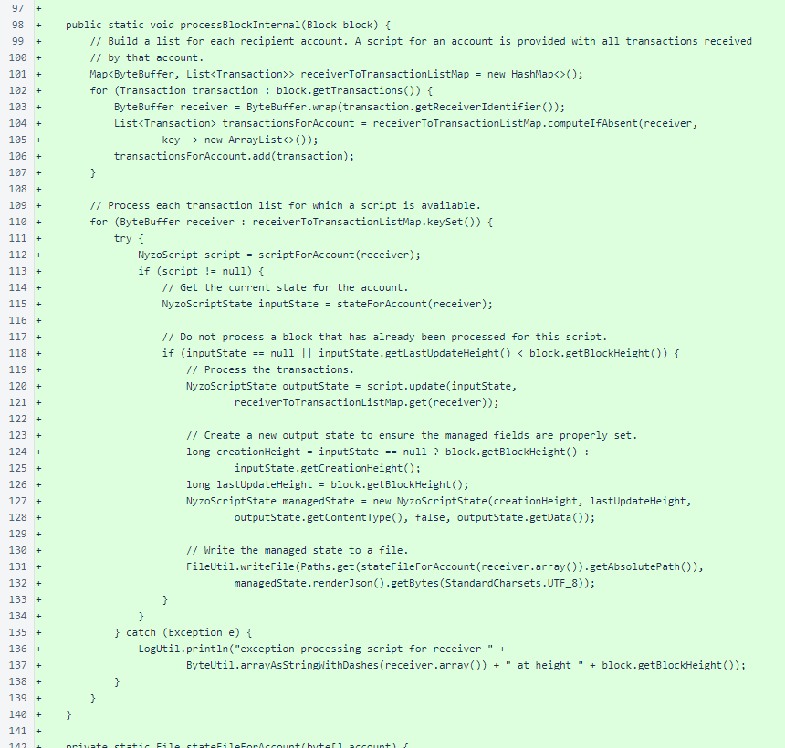
The stateFileForAccount() provides the file location where the state for
an account is stored.
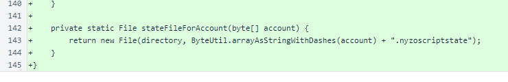
The NyzoScriptState class structures the state for scripts. It stores the
height at which the state was first created, the height at which the state was last updated, the type of data stored
in the data array, whether the state contains any unconfirmed (not yet in blockchain) data, and the actual state
data.
Two constructors are provided. A script should use the two-argument constructor, providing only the data and data
type. The script manager uses the five-argument constructor, setting the state metadata.
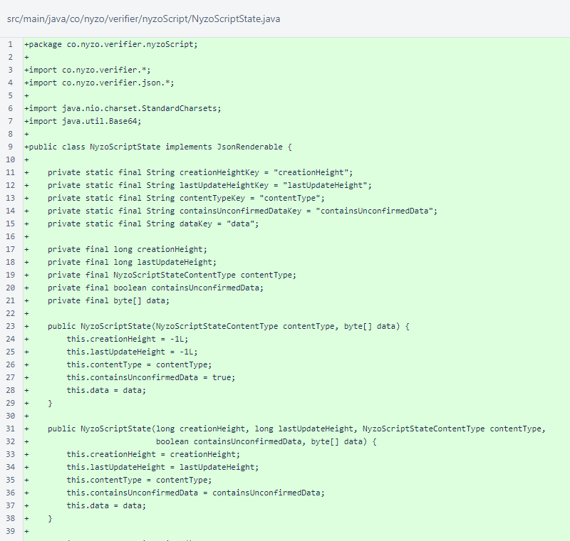
Accessors are provided for all fields.
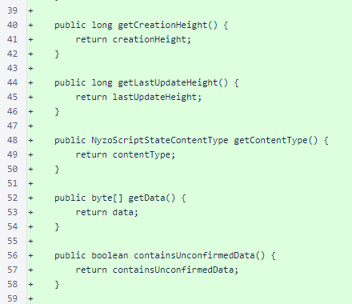
The renderJson() method serializes the state to a JSON string. The
renderDataArrayJson() method provides a JSON-suitable representation of
the data byte array.
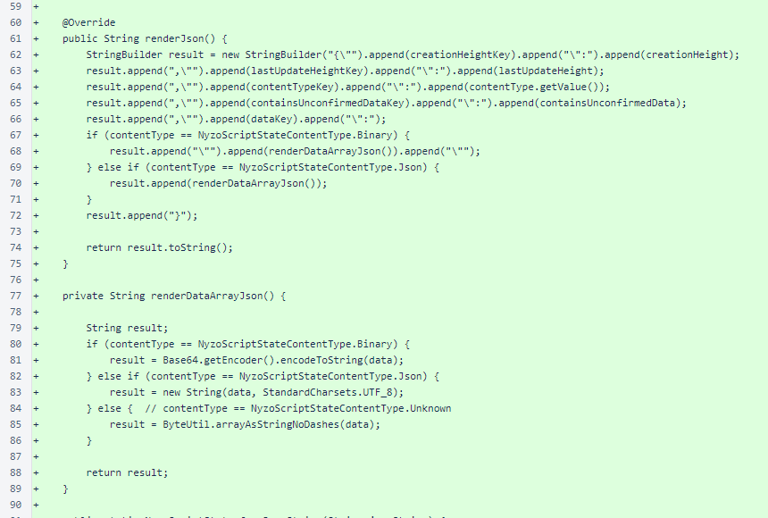
The fromJsonString() method deserializes a
NyzoScriptState object from its JSON serialization.

The NyzoScriptStateContentType enumeration allows specification of
either binary or JSON state data within a NyzoScriptState.
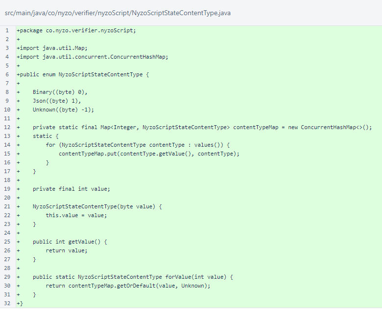
NyzoScriptStateTest ensures that serialization and deserialization of
NyzoScriptState behave as expected.

The testDeserialization() method defines 3 strings and their corresponding states.
This includes one invalid state string that results in a null state.
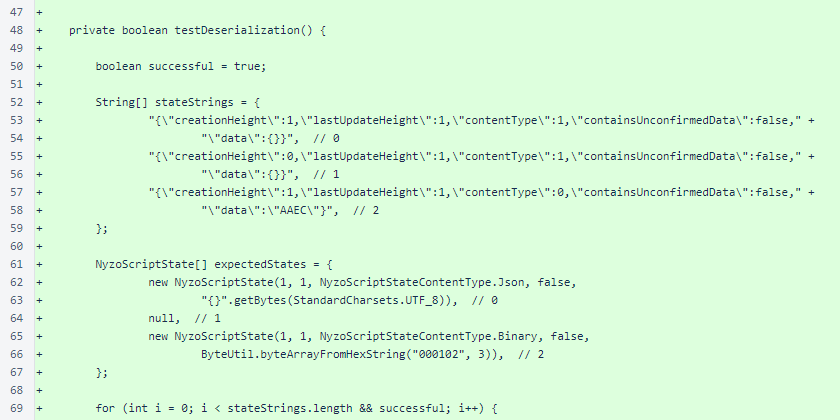
The parsed state and expected state are compared for equality with respect to nullity. If both are non-null, all
properties are also compared.
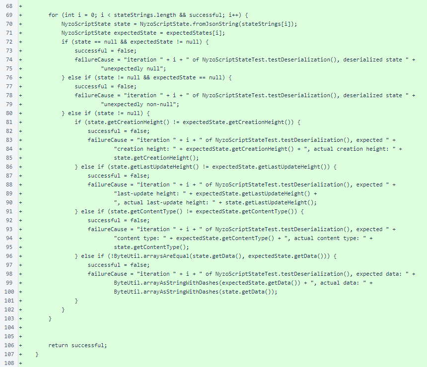
The testSerialization() method defines 2 states and their corresponding JSON
representations.
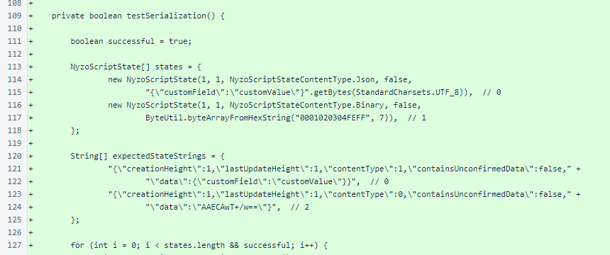
As the comment notes, knowledge of a custom renderer allows the string representation of the state to be precisely
predictable. Both the rendered state and expected state are also parsed into
JsonObject representations, and the properties of those representations are
compared. At the moment, checking properties is totally unnecessary. While checking parseability with the
Json class is useful, if the strings are character-for-character identical, they will
certainly not possess different properties after parsing. However, this code might become useful in the future if
the String comparison is no longer possible due to renderer changes.
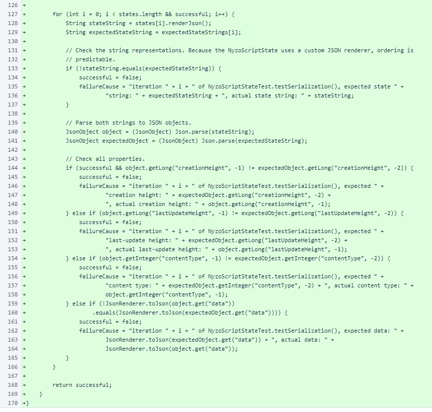
NyzoScriptStateTest was added to the test suite in
TestUtil.
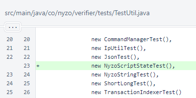